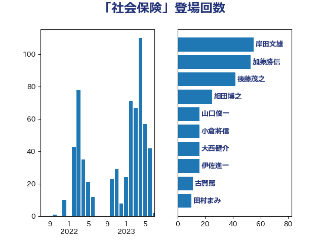

単語「社会保険」

| 岸田文雄 | 自由民主党 | 55 回 |
| 加藤勝信 | 自由民主党 | 53 回 |
| 後藤茂之 | 自由民主党 | 42 回 |
| 細田博之 | 自由民主党 | 25 回 |
| 山口俊一 | 自由民主党 | 16 回 |
| 小倉將信 | 自由民主党 | 16 回 |
| 大西健介 | 立憲民主党 | 16 回 |
| 伊佐進一 | 公明党 | 16 回 |
| 古賀篤 | 自由民主党 | 11 回 |
| 田村まみ | 国民民主党 | 10 回 |
| 芳賀道也 | 国民民主党 | 9 回 |
| 斎藤アレックス | 国民民主党 | 9 回 |
| 尾辻秀久 | 無所属 | 9 回 |
| 小川淳也 | 立憲民主党 | 9 回 |
| 福岡資麿 | 自由民主党 | 8 回 |
| 石井準一 | 自由民主党 | 8 回 |
| 山東昭子 | 自由民主党 | 8 回 |
| 鈴木俊一 | 自由民主党 | 7 回 |
| 宮本徹 | 日本共産党 | 6 回 |
| 倉林明子 | 日本共産党 | 6 回 |
| 田中健 | 国民民主党 | 5 回 |
| 小沼巧 | 立憲民主党 | 5 回 |
| 室井邦彦 | 日本維新の会 | 5 回 |
| 池下卓 | 日本維新の会 | 4 回 |
| 奥下剛光 | 日本維新の会 | 4 回 |
| 大塚耕平 | 国民民主党 | 4 回 |
| 高橋千鶴子 | 日本共産党 | 3 回 |
| 野間健 | 立憲民主党 | 3 回 |
| 福田昭夫 | 立憲民主党 | 3 回 |
| 石橋通宏 | 立憲民主党 | 3 回 |
| 田村智子 | 日本共産党 | 3 回 |
| 河野太郎 | 自由民主党 | 3 回 |
| 山際大志郎 | 自由民主党 | 3 回 |
| 山井和則 | 立憲民主党 | 3 回 |
| 伊藤岳 | 日本共産党 | 3 回 |
| 伊藤孝恵 | 国民民主党 | 3 回 |
| 中田宏 | 自由民主党 | 3 回 |
| 上田英俊 | 自由民主党 | 3 回 |
| 高階恵美子 | 自由民主党 | 2 回 |
| 高木宏壽 | 自由民主党 | 2 回 |
| 高木啓 | 自由民主党 | 2 回 |
| 金村龍那 | 日本維新の会 | 2 回 |
| 足立康史 | 日本維新の会 | 2 回 |
| 藤田文武 | 日本維新の会 | 2 回 |
| 藤岡隆雄 | 立憲民主党 | 2 回 |
| 葉梨康弘 | 自由民主党 | 2 回 |
| 米山隆一 | 立憲民主党 | 2 回 |
| 畦元将吾 | 自由民主党 | 2 回 |
| 田畑裕明 | 自由民主党 | 2 回 |
| 浅野哲 | 国民民主党 | 2 回 |
| 沢田良 | 日本維新の会 | 2 回 |
| 柚木道義 | 立憲民主党 | 2 回 |
| 松野博一 | 自由民主党 | 2 回 |
| 川田龍平 | 立憲民主党 | 2 回 |
| 岩谷良平 | 日本維新の会 | 2 回 |
| 山口那津男 | 公明党 | 2 回 |
| 吉田統彦 | 立憲民主党 | 2 回 |
| 仁木博文 | 無所属 | 2 回 |
| 高良鉄美 | 無所属 | 1 回 |
| 高木真理 | 立憲民主党 | 1 回 |
| 音喜多駿 | 日本維新の会 | 1 回 |
| 阿部知子 | 立憲民主党 | 1 回 |
| 金子道仁 | 日本維新の会 | 1 回 |
| 重徳和彦 | 立憲民主党 | 1 回 |
| 西銘恒三郎 | 自由民主党 | 1 回 |
| 落合貴之 | 立憲民主党 | 1 回 |
| 自見はなこ | 自由民主党 | 1 回 |
| 羽生田俊 | 自由民主党 | 1 回 |
| 神谷政幸 | 自由民主党 | 1 回 |
| 神谷宗幣 | 参政党 | 1 回 |
| 石田昌宏 | 自由民主党 | 1 回 |
| 石川香織 | 立憲民主党 | 1 回 |
| 甘利明 | 自由民主党 | 1 回 |
| 猪瀬直樹 | 日本維新の会 | 1 回 |
| 片山大介 | 日本維新の会 | 1 回 |
| 熊谷裕人 | 立憲民主党 | 1 回 |
| 泉健太 | 立憲民主党 | 1 回 |
| 横沢高徳 | 立憲民主党 | 1 回 |
| 梅村聡 | 日本維新の会 | 1 回 |
| 杉久武 | 公明党 | 1 回 |
| 本田顕子 | 自由民主党 | 1 回 |
| 早稲田ゆき | 立憲民主党 | 1 回 |
| 徳永エリ | 立憲民主党 | 1 回 |
| 平将明 | 自由民主党 | 1 回 |
| 川合孝典 | 国民民主党 | 1 回 |
| 岬麻紀 | 日本維新の会 | 1 回 |
| 山田太郎 | 自由民主党 | 1 回 |
| 小池晃 | 日本共産党 | 1 回 |
| 小林史明 | 自由民主党 | 1 回 |
| 寺田稔 | 自由民主党 | 1 回 |
| 太田房江 | 自由民主党 | 1 回 |
| 大家敏志 | 自由民主党 | 1 回 |
| 塩村あやか | 立憲民主党 | 1 回 |
| 堂込麻紀子 | 無所属 | 1 回 |
| 吉田久美子 | 公明党 | 1 回 |
| 加藤鮎子 | 自由民主党 | 1 回 |
| 上田清司 | 国民民主党 | 1 回 |
| 上田勇 | 公明党 | 1 回 |